Auditing failed estimators to design mechanisms
Question: How do we turn a failed estimator into a valid mechanism without losing the statistical goal?
Every proposal must state its target, public inputs, private computations, and released output.
Question: Which step protects us from mistaking “stable on my sample” for privacy?
Post-processing protects later computation only after every private choice has already been made by a DP mechanism.
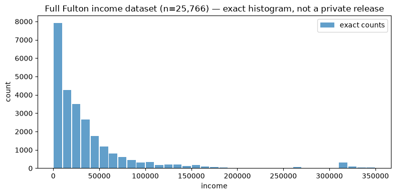
Question: Which choices in this exact histogram would change if one row changed?
Assume every value is publicly known to lie in \([L,U]\) and release
\[\bar x+\mathcal N(0,\sigma_{\mathrm{DP}}^2), \qquad \Delta_2(\bar x)=\frac{U-L}{n}.\]
This is a valid template when the range and Gaussian calibration are public.
The mechanism may be private and still be useless for a mean near tens of thousands of dollars.
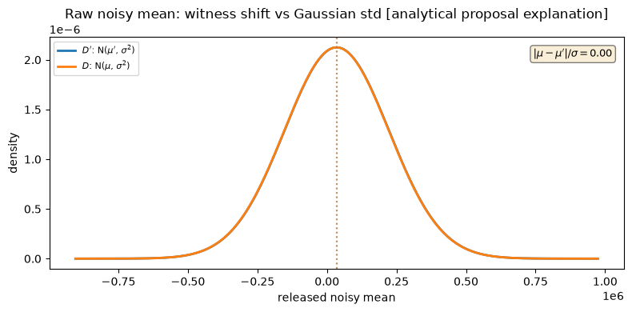
Question: Did privacy fail here, or did the public sensitivity bound destroy utility?
The next proposals try to discover a useful clipping range.
Question: What else changed besides the final clipped mean when one row changed?
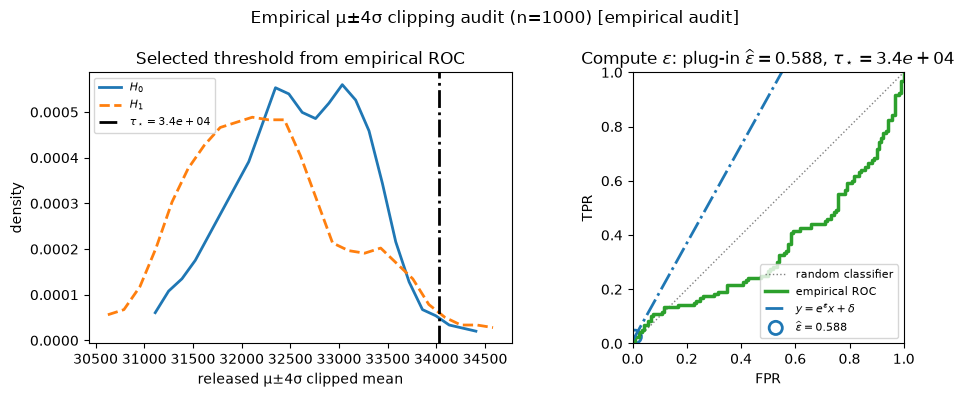
This finite audit does not cross the claimed \(\varepsilon=1\) bound on its chosen pair.
Question: Can an empirical audit ever certify the universal DP definition?
The mechanism is not
\[\text{fixed clipping}\ \longrightarrow\ \text{DP mean}.\]
It is
\[D\longrightarrow(\hat\mu(D),\hat\sigma(D)) \longrightarrow\text{data-dependent clipping and noise}.\]
Those first arrows need privacy accounting too.
Quantiles are robust on typical data, but the learned order statistics can jump across a constructed gap.
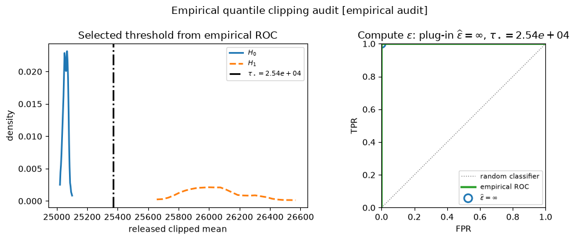
Question: Why can the output laws separate even though the final mean is clipped?
The repair must privatize the bounds before using them.
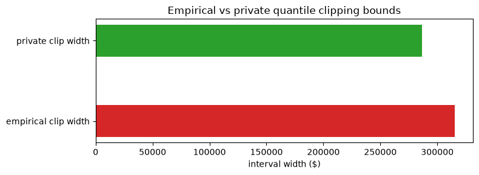
Select public threshold candidates with private rank scores, then clip and release the mean.
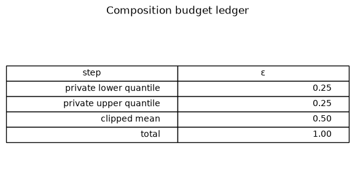
The total is \(\varepsilon=1\) by sequential composition.
Move the bounds’ share; the slices still sum to \(\varepsilon=1\). The proxy is bookkeeping, not measured error—choose an allocation with an accuracy experiment.
The median resists an isolated outlier on ordinary samples, so it is tempting to release
\[\operatorname{median}(D)+\text{value noise}.\]
But robustness describes typical contamination; DP sensitivity asks for the largest change over all neighboring datasets.
Question: Can one substituted row move the median across an arbitrarily wide gap in the value domain?
Ordinary data may hide the answer. Construct the neighboring pair that stresses the order statistic.
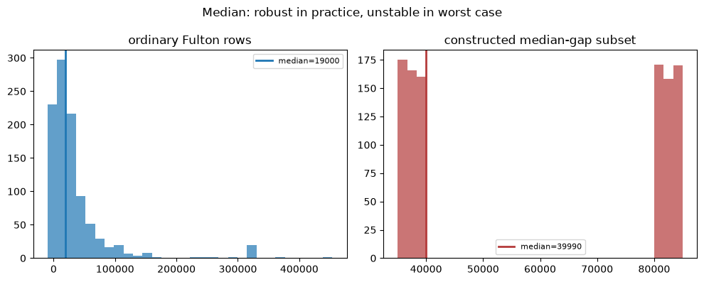
The constructed neighbors move the median from $39,990 to $59,996.
Value noise calibrated to the full public range is valid—but can erase the utility of the median.
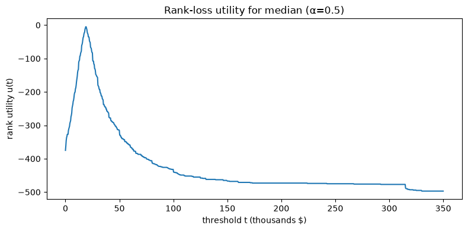
The rank utility
\[u(D,t)=-\left|\#\{x_i\le t\}-\frac n2\right|\]
changes by at most one under substitution, independent of dollar gaps.
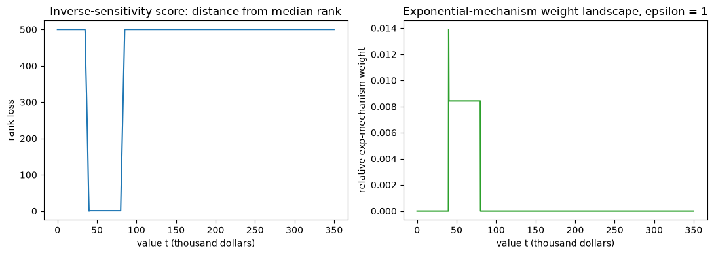
Question: Why is spending privacy on rank error more useful than adding noise in dollars?
For a roughly Gaussian population, useful clipping needs private estimates of both scale and location.
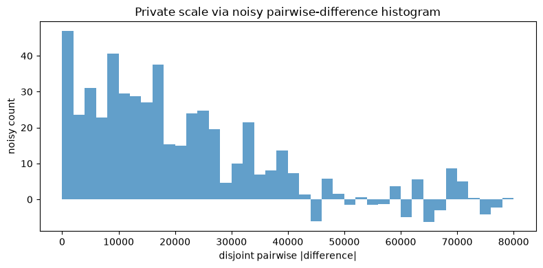
Disjoint pairwise differences \(|X_i-X_j|\) cancel the mean; a noisy histogram privately selects a scale bin.
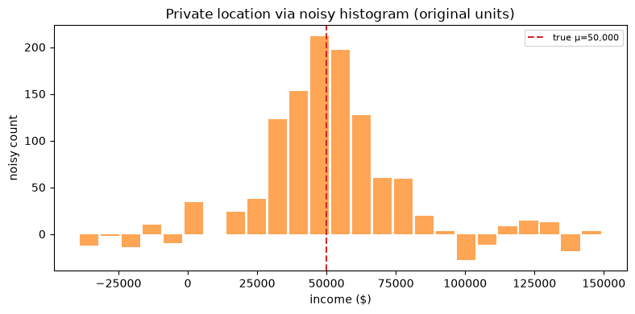
The private scale determines a useful public-grid resolution; noisy counts then localize the center before the final clipped mean.
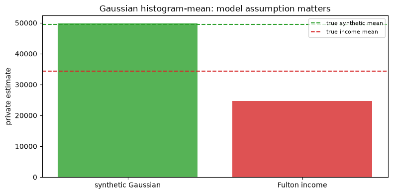
Question: If privacy accounting is valid but the Gaussian model is wrong, what failed?
| Proposal | Privacy status | Main lesson |
|---|---|---|
| Public-range noisy mean | valid, poor utility | sensitivity can dominate |
| Empirical \(\mu\pm k\sigma\) clipping | invalid | private preprocessing needs accounting |
| Empirical quantile clipping | invalid | robust thresholds are still private |
| Private quantile-clipped mean | valid | spend budget on bounds and mean |
| Median value noise | valid, poor utility | value sensitivity ignores robustness |
| Rank-based median | valid | change the metric, not just the noise |
| Gaussian localization | valid; model-dependent accuracy | privacy and accuracy are separate claims |
Next: use private selection mechanisms to choose which query or model to release.